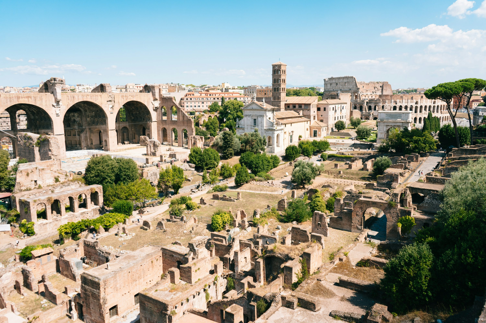
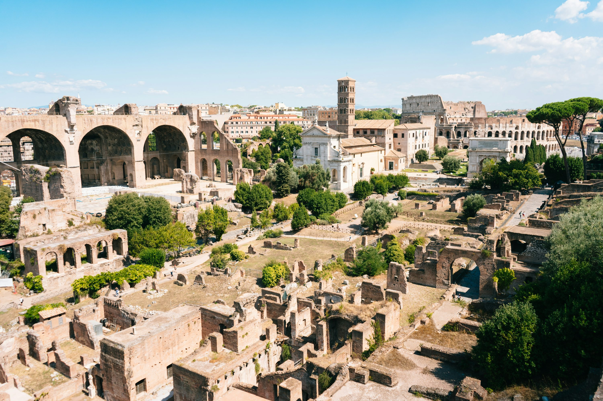
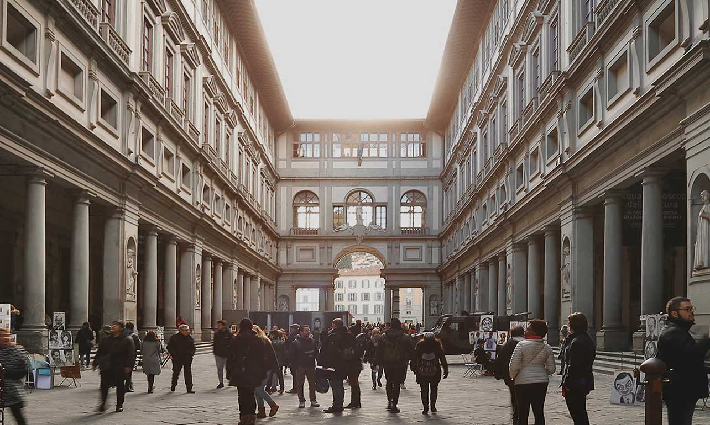
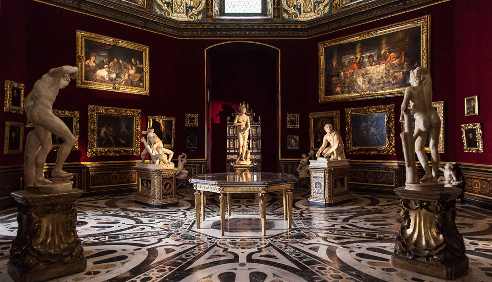
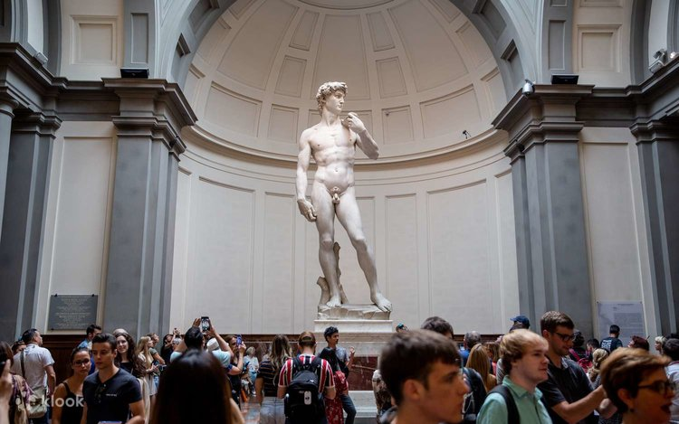
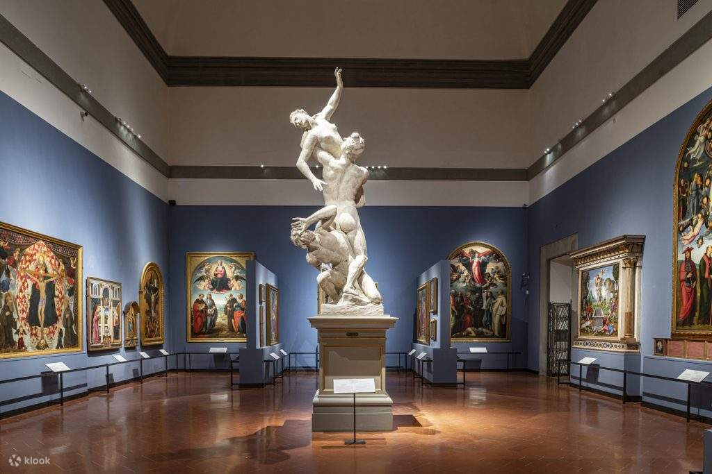

문화/역사
이탈리아 필수 코스!
이제 이탈리아의 깊은 매력… 바로 문화와 역사 속으로 한 걸음 들어가 볼 차례예요! 📚✨
이탈리아는 도시마다 수천 년의 이야기들이 숨 쉬고 있어서,
걸어 다니는 것만으로도 마치 시간 여행을 하는 느낌이죠.
오늘은 그중에서도 꼭 가봐야 할 세 곳을 소개할게요!
첫 번째 역사 여행지는… 포로 로마노(Roman Forum)! 🏛
 

로마 한복판에 펼쳐진 고대 로마의 중심지!
포로 로마노는 과거 정치·경제·종교 모든 것이 이루어지던 곳이에요.
지금은 폐허처럼 보이지만, 돌 하나하나에 2,000년의 시간이 담겨 있는 곳이죠.
- 옛 신전과 회당 사이를 걸으며 로마 시민이 된 기분 느끼기 🚶♀️
- 팔라티노 언덕에서 내려다보는 포로 로마노 전경은 감동 그 자체 😭💛
- 콜로세움과 함께 둘러보면 로마 시대가 더 생생하게 느껴져요
- 바람 부는 날엔 “아… 로마 사람들도 이런 느낌이었겠지?” 싶은 순간 🕊
두 번째 문화 스폿은… 우피치 미술관(Uffizi Gallery)! 🎨


여긴 정말… 이탈리아 예술의 핵심이라고 해도 될 정도예요.
보티첼리의 비너스의 탄생, 레오나르도 다빈치, 라파엘로 작품까지!
르네상스를 좋아한다면 무조건 필수 방문 💘
- 세계에서 가장 중요한 르네상스 작품들이 한자리에 ✨
- 복도마다 이어지는 긴 아치형 창문이 정말 우아함 🌿
- 작품 하나하나에 담긴 이야기와 상징을 보는 재미
- 시간이 순식간에 사라지는 마법 같은 미술관 💭🕰
세 번째 문화 여행지는… 아카데미아 미술관(Galleria dell’Accademia)! 🗿


피렌체에서 절대 놓치면 안 되는 곳!
아카데미아 미술관의 하이라이트는 단연 미켈란젤로의 다비드상이에요.
실제로 보면 정말 압도적인 존재감… 😭✨
- 5m가 넘는 대리석 조각의 섬세함에 감탄 🤍
- 미완성 조각들을 통해 미켈란젤로의 작업 과정 엿보기
- 규모는 작지만 임팩트는 절대 작지 않음!
- “와… 사람이 이걸 만들었다고?”라는 말이 절로 나와요
포로 로마노에서 고대 로마의 숨결을 느끼고,
우피치 미술관에서 르네상스의 아름다움을 만나고,
아카데미아 미술관에서 미켈란젤로의 천재성을 마주한다면—
이탈리아 여행은 단순한 관광을 넘어
문화와 역사를 온몸으로 느끼는 여행이 될 거예요 😌🇮🇹✨